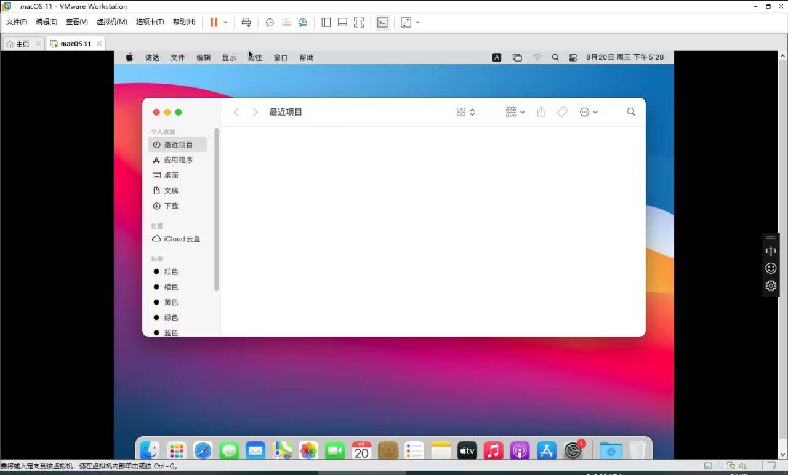

Vmware安装黑苹果备忘录
因为基本上是按照教程走的，所以本文不再赘述
仅供参考
教程：全网最详细的VMware虚拟机安装MacOS系统教程，没有之一！！！附全部资源
系统镜像：macOS Big Sur 11.0.1 (20B29).iso（因为原文是度盘链接，所以没有使用，在网上另找的，不过安装过程大同小异；此资源的原文链接原文链接）
安装后无法登录Apple ID 以及无法启用iCloud的解决办法:链接

提示：如果设备性能太低而导致长时间不动是正常的，比如说在安装界面提示“剩余不到1分钟”结果卡了好长时间的，耐心等待
Vmware安装黑苹果备忘录
http://fanshi233.github.io/2025/08/22/mac-on-vmware/